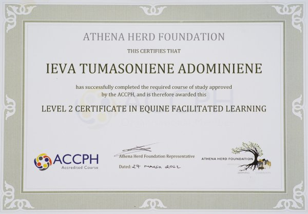

Apie mane
„Jeigu mes buvome sužeisti santykyje, tai santykyje galime ir pagyti.“Dr.G.Mate
Esu Ieva Tumasonienė – sertifikuota (akrd.ACCPH, Level 2, Jungtinė Karalystė,) žirgų asistuojamo mokymosi praktikė, Athena Herd Foundation tinklo narė (https://athenaherd.org/listing/ieva-tumasoniene). Žinias gilinau itr patirties sėmiausi žirgų asistuojamos terapijos centre „Hobukooli Park“ Estijoje, nuotoliniuose tęstiniuose mokymuose su dėstytojais iš JAV, Jungtinės Karalystės, Australijos. Patyriminio ugdymo srityje esu jau daugiau nei 10 metų, tobulinausi mokymuose Estijoje, Rumunijoje, Lietuvoje. Žirgų pasaulyje esu beveik 20 metų. Savo žirgus turiu 17 metų. Šiuo metu studijuoju psichoterapiją integratyviosios ir kūno psichoterapijos institute (IKPI, Lietuva).
- 2023 m. Lietuvos Geštaltinės psichoterapijos asociacijos konferencija 
- 2022 - 2025 m. Integratyvios ir kūno psichoterapijos institutas, vad.doc.dr.Miglė Dovydaitienė
- 2022 m. natūralios žirgininkystės seminaras su Honza Blaha Latvijoje
- 2022 m. stažuotė žirgų asistuojamos terapijos centre Hobukooli park, Estija, vad.Hele Aluste
- 2022 m. 2 lygio diplomas: žirgų asistuojamas mokymasis (Anglija), vad. J.Geach ir G.Green
- 2016 - 2023 m. patyriminis ugdymas: tarptautinių savanorių mentorė, grupių vedimas
- 2020 - 2021 m. baigti Vaikų linijos savanorių mokymai
- 2018 m. praktinis konsultavimo pradžiamokslis: praktiniai psichologinio konsultavimo mokymai (16 val.), Mokymų ir psichologinio konsultavimo centras
- 2015 - 2017 m. Lietuvos muzikos ir teatro akademija, suaugusiųjų švietimas
- 2010 - 2014 m. Vilniaus universitetas, socialinių mokslų bakalauras